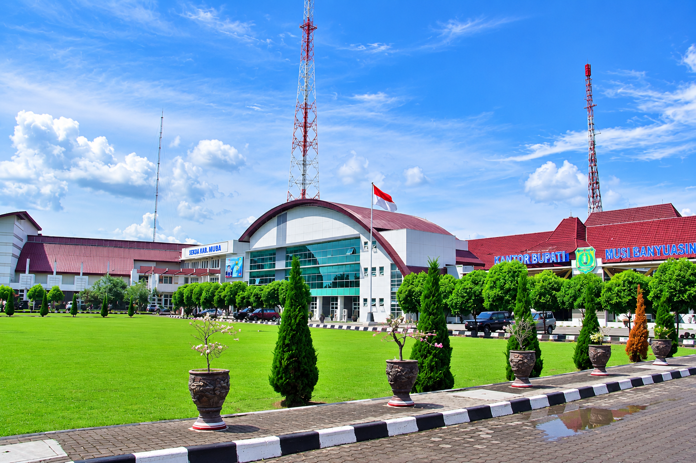

Jelajahi Pesona
Musi Banyuasin
Pesona Musi Banyuasin hadir dengan beragam pengalaman menarik untuk setiap pengunjung. Nikmati kenyamanan berbagai pilihan hotel, jelajahi keindahan wisata alam dan budaya, cicipi beragam kuliner lezat di rumah makan, serta meriahkan perjalanan dengan berbagai event dan kegiatan menarik. Mari jelajahi Musi Banyuasin, rasakan keramahan masyarakatnya, nikmati pesonanya, dan ciptakan pengalaman indah yang tak terlupakan
KABUPATEN MUSI BANYUASIN
Muba, Rumah Kita
Kebanggaan Kita
Musi Banyuasin adalah salah satu kabupaten di provinsi Sumatera selatan yang memiliki kekayaan alam, budaya, dan potensi pariwisata yang begitu beragam. Daerah ini menawarkan pesona alam yang indah, kehidupan masyarakat yang ramah, beragam kuliner khas, tempat penginapan yang nyaman, serta berbagai event dan kegiatan menarik yang menjadi daya tarik bagi wisatawan. Dari suasana kota Sekayu hingga berbagai destinasi di pelosok Muba, setiap sudutnya menyimpan keunikan dan cerita tersendiri
Musi Banyuasin menyimpan banyak pesona yang siap untuk dijelajahi. Dari keindahan alam yang menenangkan, budaya yang kaya, hingga keramahan wong Muba yang membuat setiap pengunjung merasa diterimo dan nyaman
Setiap sudut Muba punya cerito. Jelajahi berbagai destinasi wisata, nikmati suasana kota Sekayu, temukan tempat-tempat menarik, dan rasakan pengalaman baru yang mungkin belum pernah ditemui sebelumnya
Jangan lupo mencicipi ragam kuliner yang menggugah selera, beristirahat di hotel dan penginapan yang nyaman, serta ikut meramaikan berbagai event dan kegiatan yang ada di Muba. Setiap perjalanan menjadi kesempatan untuk menikmati suasana dan mengenal lebih dekat kehidupan masyarakat Muba
Ayok Jelajah Muba, Temuke Cerito! Datanglah dengan rasa ingin tahu, nikmati setiap perjalanan, dan bawalah pulang cerita indah dari Musi Banyuasin. Karena di Muba, setiap langkah punya pengalaman dan setiap kunjungan selalu meninggalkan kesan
SELENGKAPNYA →

Budaya & Sejarah
Musi Banyuasin memiliki sejarah dan budaya yang kaya, yang dipengaruhi oleh kehidupan masyarakat di sekitar Sungai Musi. Daerah ini dikenal dengan berbagai tradisi adat, kesenian, serta kehidupan masyarakat yang masih menjunjung tinggi nilai gotong royong dan kebersamaan. Sejarah Musi Banyuasin juga berkaitan erat dengan perkembangan wilayah Sumatera Selatan, termasuk aktivitas perdagangan dan pemanfaatan Sungai Musi sebagai jalur transportasi. Kekayaan budaya dan sejarah tersebut menjadi bagian penting dari identitas masyarakat Musi Banyuasin hingga saat ini.
Alam & Wisata
Musi Banyuasin memiliki kekayaan alam yang indah dan beragam, mulai dari sungai, hutan, hingga kawasan perkebunan yang asri. Daerah ini juga memiliki berbagai tempat wisata yang menarik untuk dikunjungi, seperti Danau Ulak Lia, Taman Selarai, dan wisata alam lainnya. Keindahan alam serta suasana yang tenang menjadikan Musi Banyuasin sebagai salah satu daerah yang memiliki potensi wisata yang menarik di Sumatera Selatan.
Kuliner Khas
Musi Banyuasin memiliki beragam kuliner khas yang menggugah selera dan mencerminkan kekayaan budaya daerahnya. Salah satu yang terkenal adalah PINDANG, yaitu hidangan berkuah dengan cita rasa gurih, asam, pedas, dan kaya rempah yang biasanya menggunakan ikan sebagai bahan utama. Selain pindang, terdapat pula berbagai olahan ikan sungai dan makanan tradisional lainnya yang menjadi bagian dari kuliner khas masyarakat Musi Banyuasin.
Populer
Nyaman
& Kuliner
Menarik
JELAJAHI KABUPATEN MUSI BANYUASIN
Temukan Destinasi Terbaik
AGENDA MUBA
Event & Kegiatan
PETA MUSI BANYUASIN
Temukan Muba
lebih dekat.
Lihat lokasi destinasi, hotel, rumah makan, dan berbagai titik menarik di Kabupaten Musi Banyuasin melalui Google Maps.
BUKA GOOGLE MAPS →KONTAK
Jelajah, Kenali,
Cintai Muba.
Portal ini dibuat sebagai contoh website informasi dan promosi Kabupaten Musi Banyuasin. Data, foto, harga, alamat, dan agenda dapat diperbarui melalui editor
info@jelajahmuba.id →